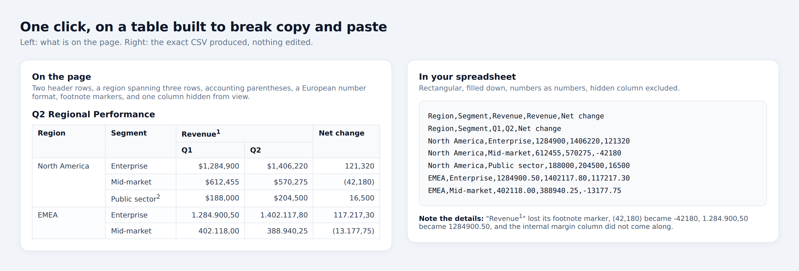
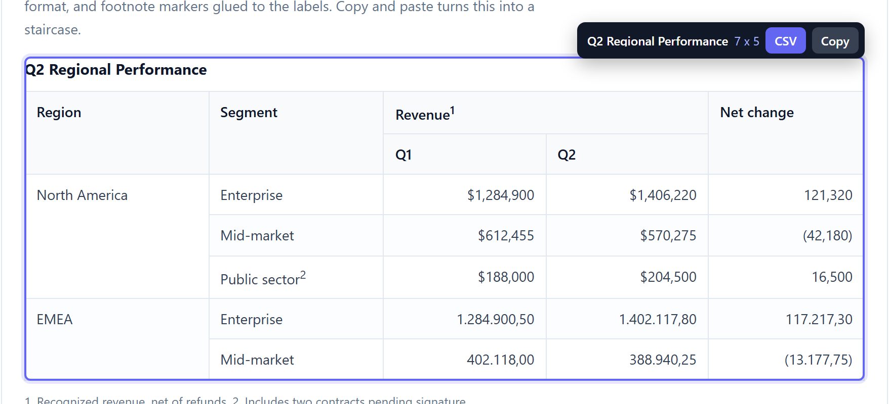
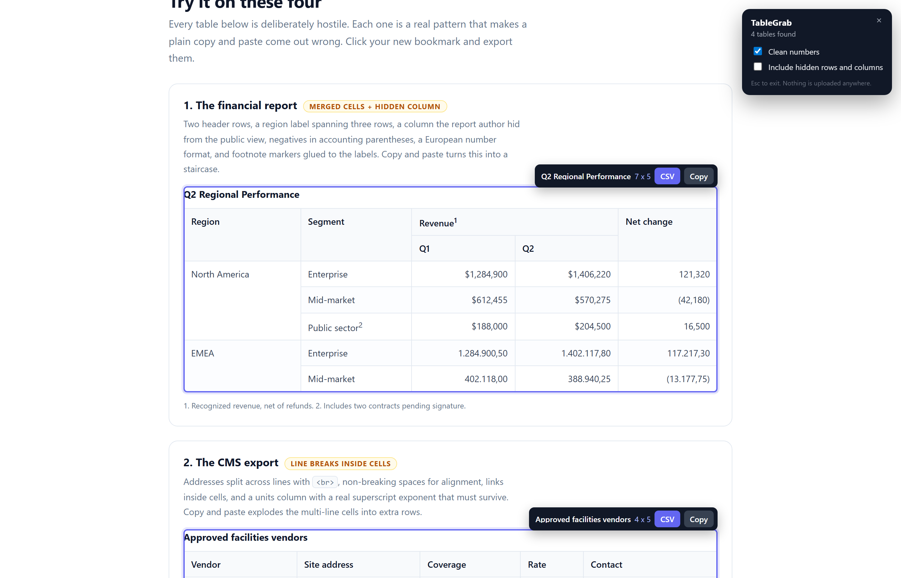

Build Lab / One-click browser automation Shipped
TableGrab — any web table to clean CSV, in one click.
A zero-install browser tool that turns any web table into a spreadsheet-ready CSV. It expands merged cells, drops CSS-hidden columns, normalizes number formats, and blocks CSV formula injection.
“Forty-five automated assertions run it in headless Chromium against tables built to break it, and the failure modes are published on the page.”
See it work
Thirteen seconds, no edit: the tool runs against the deliberately hostile test table on its own page—merged headers, a hidden column, accounting-parenthesis negatives, European decimals, and footnote markers glued to the labels.
The problem
Business data lives in HTML tables nobody can export: supplier portals, internal dashboards, regulatory filings, wiki pages, admin panels with no download button. The manual path is copy, paste, then fight the result—and the result is broken in four predictable ways:
- Merged cells (rowspan / colspan) paste as a staircase, so the data cannot be pivoted or joined.
- Numbers arrive as text. $1,284,900 is a string. (42,180) is a string, not a negative.
- Hidden columns come along invisibly, so the visible column count doesn’t match the sheet.
- Multi-line cells explode into extra rows and shift everything below them.
So people retype—30 to 60 minutes per table, introducing typos into numbers that decisions then get made on.

The architecture
One self-contained tool you drag to your bookmarks bar. No extension, no server, no build step at runtime. The UI renders in a shadow root so the page’s CSS can’t break the overlay—and the overlay can’t break the page.
- 01Find candidates
Real tables plus ARIA grids; layout tables filtered out, same-origin iframes traversed.
- 02Build the grid
Rowspan/colspan expanded into a true rectangle with merged values filled down and across.
- 03Mark hidden
Computed styles, hidden attributes, aria-hidden, and zero-width cells detected.
- 04Extract & normalize
Footnotes stripped, currency and separators removed, (n) to -n, European decimals converted.
- 05Serialize safely
RFC 4180 CSV with UTF-8 BOM and a formula-injection guard on every cell.
- 06Deliver
Download as CSV, or TSV to the clipboard for direct paste into a sheet.


The guardrails
- CSV injection is the default case, not the edge case. Any cell starting with =, +, @, tab, or CR is neutralized so the spreadsheet treats it as text—while genuine negatives stay numeric. Verified against live HYPERLINK-exfiltration and DDE payloads.
- No network surface at all. No fetch, no XHR, no analytics—verified by grep against the shipped artifact. That’s what makes it adoptable inside a company that would never approve an extension.
- The tool does not guess. Ambiguous formats like 12,5 pass through unchanged, because a wrong silent conversion is worse than no conversion.
- Failure is bounded. Cross-origin frames fail silently instead of aborting the run; if no table is found, the tool says so and removes itself.
Verified result
Two automated suites—45 assertions—run against real Chromium via Playwright. Not a demo walkthrough: exact-output assertions on the shipped, minified artifact. Highlights:
- Two-level headers with colspan groups and three-row rowspan labels filled correctly.
- $1,284,900 → 1284900 · (42,180) → -42180 · 1.284.900,50 → 1284900.50.
- Three injection payloads neutralized while real negatives stayed numeric.
- Structural edge cases: tfoot-before-tbody, nested tables, editable grids, same-origin iframes.
Known limits—virtualized grids, cross-origin iframes, canvas-rendered tables—are published on the tool’s own page, not buried. Predictability is the feature.
Data stuck in a page somewhere?